Capitolo 8
Effetto Fotoelettrico
In questa scheda descriveremo un’esperienza relativa alla luce visibile. Dai risultati di questa esperienza scopriremo alcune importanti proprietà della luce che non sono comprese nell’ambito della teoria elettromagnetica, ma che possono essere spiegati solo introducendo dei concetti nuovi legati alla Fisica Quantistica.
Descrizione dell’esperimento.
L’effetto fotoelettrico consiste nel fatto che quando la luce incide su una superficie metallica da questa vengono emessi degli elettroni (Fig. 1)
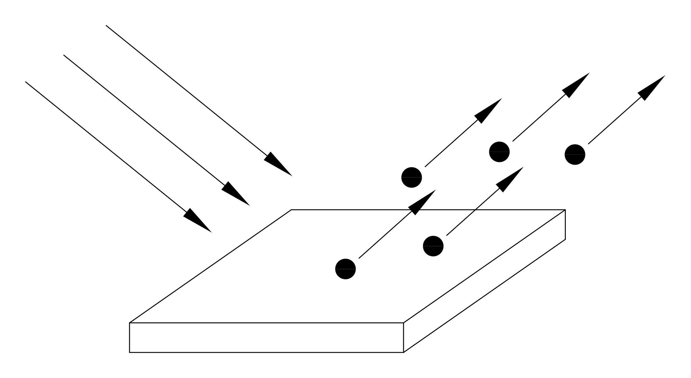
Per rilevare questi elettroni si può usare un sistema come quello raffigurato in figura 2. Abbiamo un’ampolla di vetro nella quale è fatto il vuoto. All’interno dell’ampolla c’è un catodo con una superficie molto estesa, ed un anodo con una superficie ridotta al minimo. Quando la luce colpisce il catodo, questo emette elettroni per effetto fotoelettrico, alcuni di questi elettroni finiscono sull’anodo e formano una corrente I che può essere misurata.
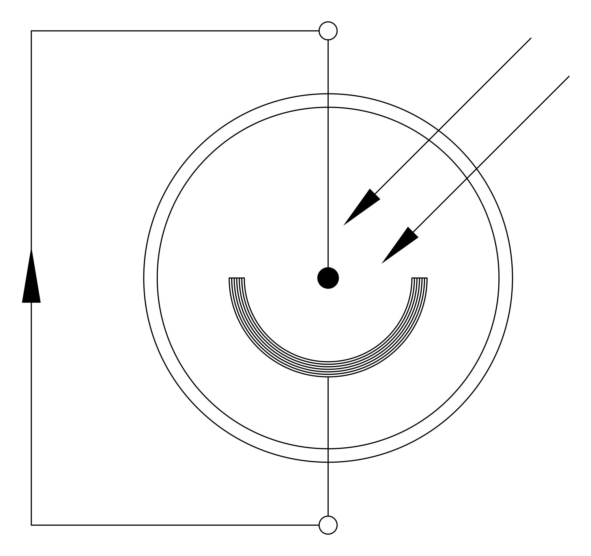
Anche l’anodo può emettere degli elettroni, tuttavia saranno molti di meno rispetto a quelli emessi dal catodo perché la superficie del catodo è molto più grande; inoltre il catodo e l’anodo non sono fatti dello stesso metallo, infatti il primo è fatto di un metallo che libera elettroni molto facilmente, generalmente un metallo alcalino, mentre il secondo è fatto di un metallo che libera pochissimi elettroni, generalmente di platino.
La corrente I che circola nel circuito dipende in generale dall’intensità e dalla frequenza della luce incidente. Questa corrente è molto debole e può essere misurata con un buon amplificatore di misura, tuttavia lo scopo del nostro esperimento non è quello di contare quanti elettroni vengono emessi, quindi non misureremo la corrente I.
Lo scopo dell’esperimento è di determinare con quanta energia vengono emessi i singoli elettroni, in funzione delle caratteristiche della luce incidente.
Per misurare l’energia degli elettroni emessi si utilizza il sistema raffigurato in figura 3 a pagina seguente.
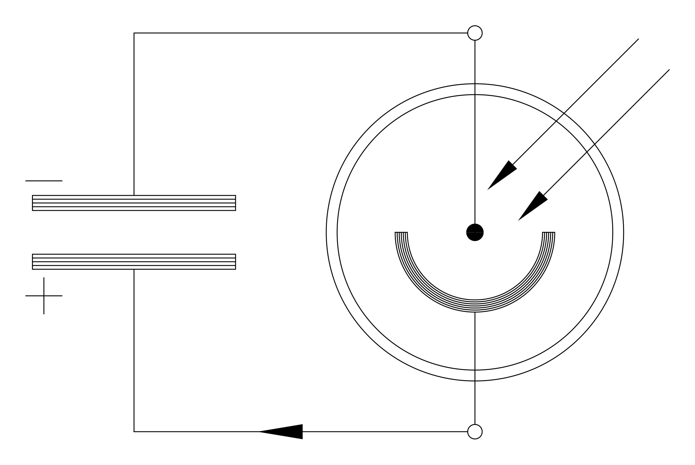
Quando si fa incidere la luce si ha un passaggio di elettroni e quindi il condensatore inizia a caricarsi. La tensione che si genera ai capi del condensatore produce un campo elettrico tra il catodo e l’anodo che si oppone al moto degli elettroni. Se l’energia posseduta dagli elettroni è sufficiente a superare la differenza di potenziale, allora il passaggio di corrente continua e il condensatore continua a caricarsi. Il processo si ferma quando la tensione (V ai capi del condensatore, è tale che il prodotto , dove è la carica dell’elettrone, è appena superiore all’energia posseduta dagli elettroni; infatti il prodotto  è l’energia necessaria a superare la differenza di potenziale e, quando , avremo che gli elettroni, pur continuando ad essere emessi, non potranno più arrivare all’anodo.
è l’energia necessaria a superare la differenza di potenziale e, quando , avremo che gli elettroni, pur continuando ad essere emessi, non potranno più arrivare all’anodo.
Dunque per ottenere l’energia con la quale gli elettroni vengono emessi ci basterà misurare la tensione finale che raggiunge il condensatore ed usare la relazione .
Descrizione dell’apparato sperimentale.
La figura 4 mostra una foto dell’ampolla che è stata usata per realizzare l’esperimento.
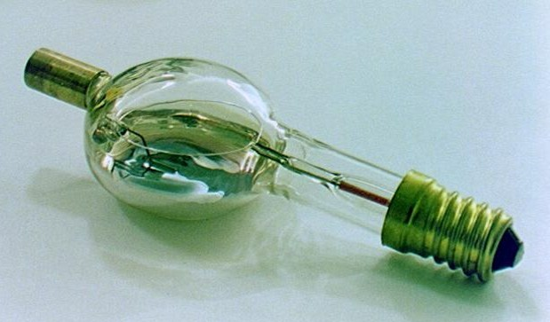
In questa ampolla il “fotocatodo” è costituito da uno strato di potassio (il potassio è un metallo alcalino) depositato direttamente sulla superficie interna del vetro, mentre l’anodo è costituito da un filamento di platino.
Visto che il potassio è molto “volatile” può capitare che un po’ del potassio che costituisce il catodo si possa trasferire e depositare sull’anodo di platino; in questo caso avremo l’effetto indesiderato che anche l’anodo potrà emettere elettroni. Per evitare questo inconveniente è stato preso un accorgimento: il filamento di platino può essere fatto attraversare da una corrente, in questo modo si riscalda e si purifica dagli atomi di potassio. Questa operazione di “pulizia” va eseguita prima di ogni prova sperimentale.
L’ampolla viene montata su un apposito supporto rappresentato in figura 5; questo supporto è munito di un coperchio con una finestrella attraverso la quale viene fatta passare la luce.
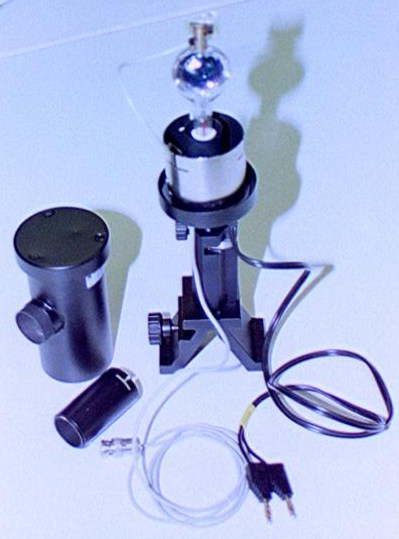
La figura 6 mostra una lampada ai vapori di mercurio utilizzata per illuminare il fotocatodo.
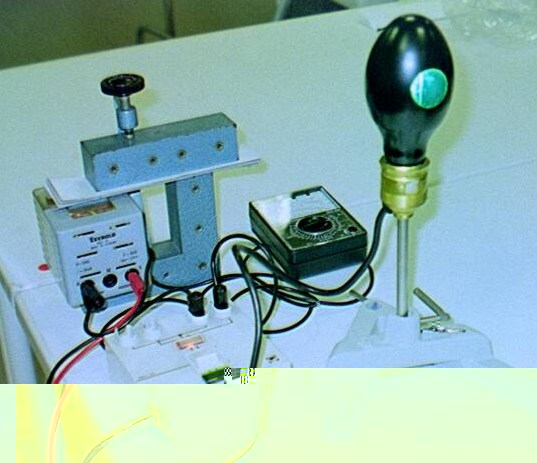
Per ottenere una luce monocromatica si usano dei filtri interferometrici, le figure 7 e 8 ci mostrano rispettivamente il filtro per il blu ed il filtro per il giallo. Useremo in tutto quattro filtri corrispondenti a quattro lunghezze d’onda, e quindi a quattro frequenze:
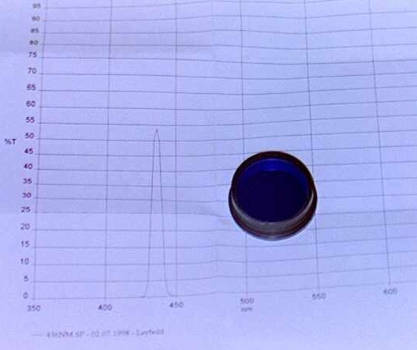
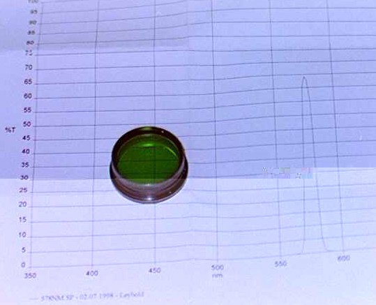
La figura 9 mostra il supporto per questi quattro filtri che comprende anche un diaframma ad iride. Ruotando il “cerchio” dei filtri si può selezionare un filtro e quindi si può regolare la lunghezza d’onda della luce incidente; invece aprendo e chiudendo il diaframma si può regolare l’intensità della luce incidente.
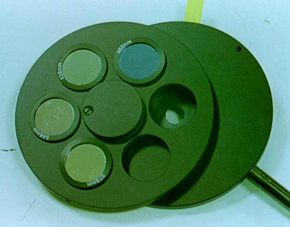
La figura 10 mostra il banco ottico montato; da sinistra a destra abbiamo: la lampada ai vapori di mercurio, un diaframma a iride, una lente convergente con una lunghezza focale di 50mm, il supporto per i quattro filtri e per un altro diaframma a iride ed, infine, abbiamo il supporto che contiene l’ampolla protetta dai raggi luminosi esterni.
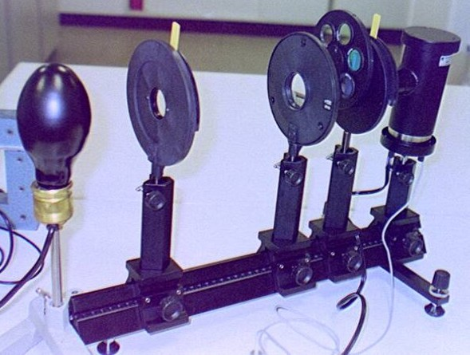
La figura 11 mostra l’intero apparato sperimentale mentre è in funzione. In basso vediamo gli strumenti di misura, a sinistra si vede il condensatore. Al centro c’è un separatore di impedenza e a destra un normale voltmetro.
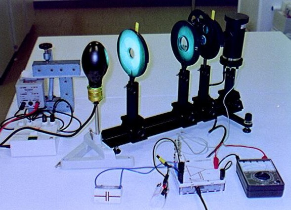
Per misurare la tensione ai capi del condensatore non può essere usato direttamente un normale voltmetro, perché l’impedenza interna di un voltmetro è troppo bassa e quindi costituisce una via di circolazione per la corrente fotoelettrica (Fig. 12). Per superare questa difficoltà si usa un separatore di impedenza come è schematizzato in figura 13. Il separatore di impedenza è uno strumento elettronico che ha un’impedenza interna dal lato del condensatore molto più alta dell’impedenza interna di un normale voltmetro, e che riporta in uscita la stessa tensione rilevata in ingresso, permettendo di eseguire la misura senza difficoltà.
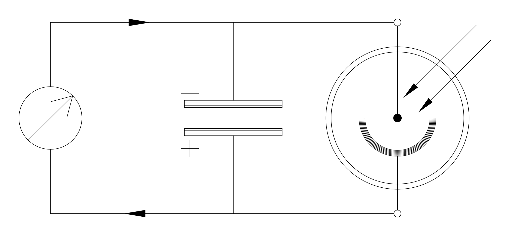
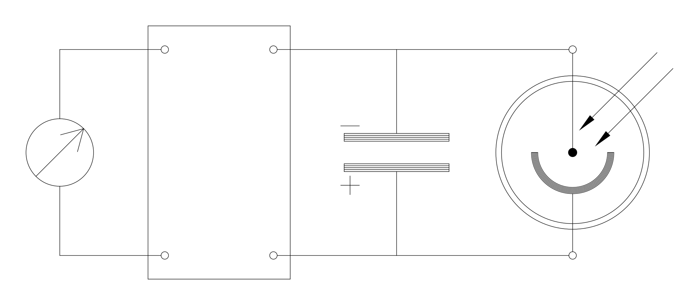
Risultati sperimentali.
Prima di tutto si è osservato che l’energia di emissione degli elettroni non dipende dall’intensità della luce incidente. Infatti aumentando l’intensità della luce, regolando l’apposito diaframma a iride, si osserva che aumentava il tempo necessario per caricare il condensatore, il che significa che aumentava l’intensità della corrente e cioè aumentava il numero di elettroni emessi per unità di tempo, tuttavia la tensione finale che raggiungeva il condensatore restava invariata.
Invece variando la frequenza della luce incidente si otteneva una variazione della tensione finale, e quindi una variazione dell’energia posseduta dagli elettroni emessi. La tabella ed il grafico di figura 14 riportano i valori registrati dell’energia in funzione della frequenza della radiazione incidente.
Colore Frequenza
(1014Hz) Energia
(eV) Giallo 5,19 0,44 Verde 5,49 0,54 Blu 6,88 1,05 Violetto 7,41 1,24
Si osserva che i punti si dispongono su una retta con una pendenza di ; si può osservare che cambiando l’ampolla con un’altra che contiene un metallo diverso, la pendenza della retta non varia quindi la pendenza della retta non dipende dal tipo di metallo; la pendenza ottenuta con misure più precise è di . Inoltre anche se non abbiamo eseguito le relative misure si può osservare che per frequenze minori di la tensione è zero, il che significa che non vengono emessi elettroni che possono caricare il condensatore; questa frequenza di soglia cambia se si cambia il metallo di cui è costituito il fotocatodo.
Interpretazione dei risultati.
Questi risultati non possono essere spiegati in base alla teoria elettromagnetica classica. Infatti dal punto di vista classico l’energia di un’onda elettromagnetica non dipende in alcun modo dalla frequenza, ma dipende dal quadrato dell’ampiezza. Con il nostro esperimento invece abbiamo verificato che l’energia degli elettroni emessi non dipende dall’ampiezza dell’onda incidente, ma dipende dalla frequenza.
Il primo ad interpretare correttamente questi risultati fu Albert Einstein in un lavoro che presentò nel 1905, prima della formulazione della Meccanica Quantistica; per questo lavoro gli fu assegnato nel 1921 il premio Nobel per la fisica.
Einstein pensò che la luce fosse costituita da un fascio di particelle chiamate fotoni, e che ogni particella fosse dotata di una certa energia proporzionale alla frequenza secondo la formula (dove h è la stessa costante di Planck che compare nell’equazione si Schrödinger!); in questa visione l’intensità della luce è proporzionale al numero di fotoni che passano per unità di tempo moltiplicato per l’energia posseduta da ogni singolo fotone.
Secondo quest’interpretazione quando un fotone urta un elettrone gli trasferisce la sua energia; l’elettrone a questo punto può superare la barriera di potenziale che lo lega al metallo ed, una volta fuori, avrà un energia pari a quella fornitagli dal fotone meno quella che ha dovuto spendere per superare la barriera di potenziale ; dunque uscirà con un’energia . Questa formula è in perfetto accordo con i risultati sperimentali. Se per caso la frequenza della luce è troppo bassa e si ha , allora l’elettrone pur avendo ricevuto l’energia dal fotone non ne avrà a sufficienza per superare la barriera di potenziale, e quindi non potrà essere emesso.
Il fotone è una particella che corre alla velocità della luce, quindi per poterlo studiare bisogna usare delle equazioni che siano coerenti con la Teoria della Relatività.
L’equazione di Schrödinger è stata formulata nella quarta scheda e l’abbiamo dedotta partendo dalla condizione che doveva essere coerente con l’equazione classica di Newton; ma questa equazione non è coerente con la Teoria della Relatività, quindi neanche l’equazione di Schrödinger è coerente con la la Teoria della Relatività. Dunque, purtroppo, l’equazione di Schrödinger non può essere applicata al fotone.
In futuro studieremo la Meccanica Quantistica Relativistica, per ora, come risultato di questa scheda, ci ricorderemo della relazione di Einstein per l’energia dei fotoni  .
.
Osservazione: nella Teoria della Relatività per ogni particella si può calcolare l’energia e la quantità di moto secondo le formule e . Per i fotoni abbiamo quindi:
sostituendo per E la formula abbiamo
Dunque abbiamo ritrovato la relazione di De Broglie anche per i fotoni.